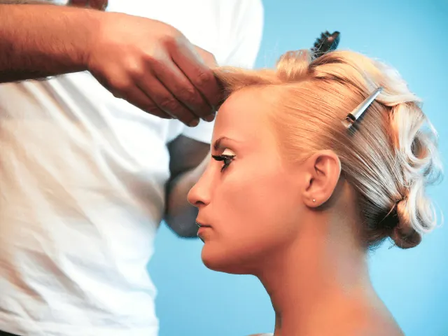
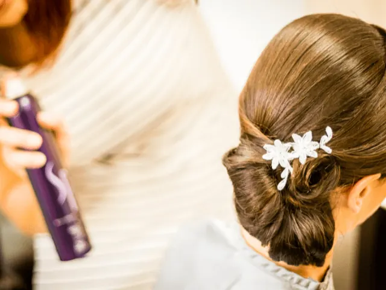

Partnerbijdrage
De perfecte krul, deze haarstylistes maken jouw kapsel tot een waar plaatje
Gepubliceerd op 31 maart 2023, bijgewerkt op 26 februari 2024
Onderdeel van de gids Trouwen in Nijmegen en Kappers in Nijmegen

Op je trouwdag wil je er natuurlijk op je allermooist uitzien en daar hoort een perfect kapsel bij. Maar hoe krijg je die perfecte krul en hoe maak je een keuze uit al die goede en ervaren haarstylistes? In deze blog delen we onze tips en aanbevelingen voor de beste haarstylistes voor je bruiloft.
Een goede haarstyliste is essentieel voor je bruiloft
Op je trouwdag wil je er natuurlijk prachtig uitzien, en een goede haarstyliste is daarvoor essentieel. Zij weet precies welk kapsel bij jouw gezicht en haar past, en helpt je ook bij het kiezen van de juiste producten om je kapsel de hele dag mooi te houden.
Hoe kies je de juiste haarstyliste voor je bruiloft?
Het kiezen van de juiste haarstyliste kan lastig zijn, maar er zijn een aantal dingen waar je op kunt letten. Allereerst is het belangrijk om referenties te vragen en online recensies te lezen. Je wilt natuurlijk wel zeker weten dat je een ervaren en professionele haarstyliste hebt.
Daarnaast is het ook belangrijk om te kijken naar het portfolio van de haarstyliste. Heeft ze ervaring met het creëren van kapsels die vergelijkbaar zijn met wat jij voor ogen hebt? Als je bijvoorbeeld een ingewikkeld vlechtwerk wilt, wil je een haarstyliste die daarin gespecialiseerd is.
Welke kapsels zijn leuk voor het trouwen, die je zelf niet kan?
Op je trouwdag wil je er natuurlijk perfect uitzien, en een goede haarstyliste is daarvoor essentieel. Er zijn veel verschillende kapsels die geschikt zijn voor bruiloften: van de klassieke chignon tot romantische golven of ingewikkelde vlechtstukken. Kies een stijl die bij jouw gezicht en stijl past, en zoek daarna een haarstyliste met ervaring in het creëren van deze look. Zo ben je verzekerd van het perfecte kapsel op jouw grote dag!

Welke haarstylistes vind je in Nijmegen?
Knapsels: Janet Fiévez-Smolders en Elyse Smetsers zijn gepassioneerde haarstylistes en visagistes.. Beiden streven ze ernaar om het beste uit hun klanten te halen met persoonlijke aandacht, service en kwaliteit. Ze zijn gepassioneerd over het creëren van unieke en prachtige looks die het karakter van hun klanten benadrukken.
De haarsmit: Bij de Haarsmit zijn al vele bruiden geholpen aan een droomkapsel. Zo heeft de haarsmit een aparte website voor al haar klanten die binnenkort gaan trouwen. Ze helpt je niet alleen aan een perfect kapsel, maar kan ook voor de visagie zorgen.
KoopmanKappers: Bij Koopman snappen ze dat een bruiloft erg belangrijk is en zij zeggen dan ook: ‘Op deze bijzondere dag, hoort een perfecte jurk, maar zeker ook een perfect kapsel. Verschillende factoren zoals een thema, persoonlijke smaak of trends spelen een rol bij het creeëren van het perfecte kapsel.’
Seda’s: niet gewoon een goede kapperszaak maar naar eigen zeggen: ‘Ook voor advies over make-up, feest- en bruidskapsels kun je bij ons terecht. Onze kappers gaan regelmatig naar cursussen en zijn dus helemaal “up to date” met hun kennis over haar, huid en beauty.’
Haar.expert: HE Haarservice in Nijmegen verzorgt bruidskapsels die perfect zitten en passen bij jouw gezicht en stijl. HE Haarservice adviseert je over alle mogelijkheden en heeft ruime ervaring met en liefde voor bruidskapsels. Neem contact op om de mogelijkheden te bespreken of een afspraak te maken.

Conclusie
Als het aankomt op het vinden van de perfecte krul voor je bruiloft, is een ervaren en professionele haarstyliste essentieel. Door te letten op referenties en het portfolio van de haarstyliste, en door te weten welke stijlen je graag zou willen uitproberen, komt het helemaal goed op jouw grote dag!
DE ULTIEME TROUWGIDS VIND JE HIER
BEKIJKKappers en barbers in Nijmegen
Zin om te beginnen? In onze bedrijvengids vind je alle 106 kappers in Nijmegen, met openingstijden, kenmerken en een kaart.
Bekijk alle 106 kappers in Nijmegen
Heb je zelf een kapper? Laat je hier uitlichten.